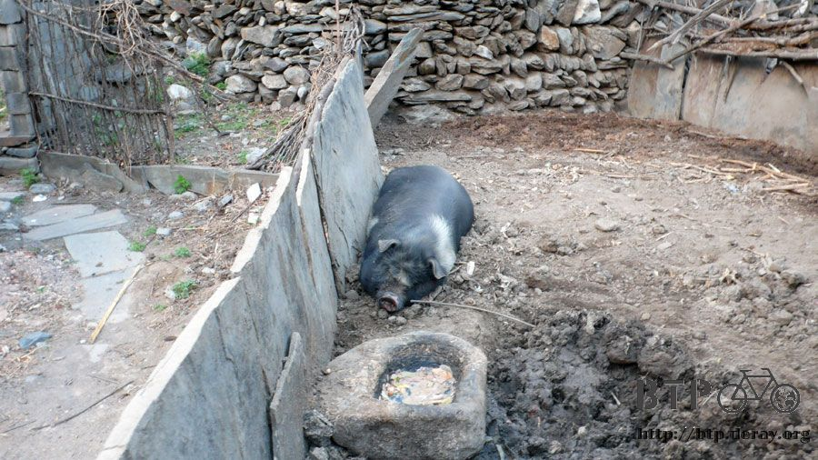

Lost In Paradise
Without the mosquitoes zooming around me I could have a nice sleep.
But I woke up at around four thirty because the chickens outside of my room were clucking intensely.
I slowly opened my eyes and looked outside.
The day was getting bright but I still didn’t want to wake up, not this early.
The problem was that I couldn’t turn off the clucking alarm.
So I struggled and struggled till around five thirty and woke myself up.
Before I slept Lesley’s mom gave me a thermo bottle, of course in it was hot water.
I poured hot water in my bottle with Zhao sir’s tea and drank it to warm myself.
It’s cold in the mountain and I was breathing white clouds out of my mouth.
I wore shorts and T-shirt and went out to pee.
Next to the latrine there’s a big black pig and it was still sleeping.
Even though I struggled for an hour to wake up but I am still more diligent than the pig.
I felt good about this even though I am comparing myself with a pig.
So I took a picture to prove that I am better than the pig.

In the house garden they have a tree full of beautiful flowers.

I did the bed and organized my luggage.
I found my tear gas for self defense so I practiced with it.
“Drop everything valuable right now!” The hijacker shouted.
“I am so scared I can’t move, just come and take anything you want!” Me acting cowardly.
And then when the robber comes close I take out the tear gas a spray his face.
I was acting out so realistic that I sprayed a little tear gas out.
I thought that a little tear gas won’t do much affect so I kept organizing my luggage.
On the next ten minutes I sneezed about thirty times.
I checked Dido for loose nuts, aired the tires and then put the packs back on Dido.
Then I pushed Dido right back up hill and went to have breakfast at the restaurant.
I told Fortune Restaurant’s owner, Hua Lee, that anything is fine for breakfast.
So she gave me a big bowl of congee, a Chinese pancake and some salty pickled vegetables.
The pancake was good, the congee was very common but the salty pickles were extremely salty, way over in salt.

“Madam Hua, isn’t this too salty?”
“Really? I pickled it two days ago and found it a little flavorless so I put more salt in.”
With one spoon of congee I took a little piece of the salty pickle or I had to have a big bite on the pancake.
I finished up the pancake and the congee but there is still plenty of salty pickles left.
I could finish it. I know it’s good to eat something salty to regain my body’s lost salt but this is way over salted.
I spend 1.5 on my breakfast.
I took a picture of her before I left.
Even I got here by my stupid mistake but it was nice to know such a nice restaurant and hotel.
It was very fortunate for me.
I was on the wrong way but I insisted not to turn back.
So I kept riding on the same direction.
Madam Hua told me that if I kept going forward there’s an uphill of about 50~60Km.
I don’t even know after climbing the hills I will get to my destination.
Seven thirty I departed with determination.
“Ride slowly and safely, come back and visit us any time.”
The GPS told me that I was very lost yesterday so I will try to get out of the mountain today and head to the city.
Before going downhill, I have a long hill to climb.
I rode for a long while since I departed around seven thirty.
There’s no car going around me and it is very quiet
however it was a long uphill ride combined with an unstoppable headwind.
Rule number 12, as long as my speedometer shows that I am not going under 5Km/h
there’s no need for me to walk and push my bike. Since walking speed is about 5Km/h.
Beautiful scenery decorated the road. It’s full of cherry blossoms on this mountain.

Twice I had chance to go off the mountain but I felt if I just left I would miss something.
So I kept going a long way in the mountain.
So when I finally got off the mountain I had to ride a longer way to my destination.
In comparison with yesterday’s coal dusted road,
todays is full of marble stone cut to rectangular shape and piled along the road or boxed.
It was uphill all the way and the cliffs around me were very steep.
It was so astonishing but at the same time I was afraid of loose rocks falling.
I felt exhausted around nine thirty since I was riding up hill since early in the morning.
So I ate the butter I took at the airplane without anything
but I was still hungry so I finished up my last provision, one pack of cookies.
Around ten past ten I arrived at a village called Tang Shang.
There were about seven or eight women sitting by a door chatting
so I asked them if there’s any restaurant along the way.
They told me that if I climb a little more there’s a gas station ahead the sell food.
I then requested to take a picture of them but they said that they were ugly and hid themselves.
I could only get one of them into the picture.
Along the way there were trees decorated with red flowers.
When the wind blew the petals started to dance with the blowing wind.
It’s a very stunning picture. It’s more like I rode into a paradise.
Just like the women told me, after about 7 to 8Km I found a gas station but there were nobody.

I didn’t see any restaurant or restaurant signs there.
I rode over with doubt. The owner opened the door and asked me to enter.
The owner gave me a menu when I asked what they had.
It’s so good to be able to read and understand the menu.
They had varieties from cold dish to hot pot and from 5RMB to 18RMB.
I thought for a moment then ordered a Kongbao chicken chump that cost 10RMB.
I drank tea while I waited. They even put flowers in the tea.
Then the chef took out a big dish of chicken chump and a big bowl of white rice.
I regret that I ate the cookies earlier, now I can’t finish this. Sigh…

People asked me where I was heading while I ate.
I told them that I plan to go to Baoding and then head to Xian.
I also told them that from Xiaher to here was all uphill, it was very though.
The owner told me that it will be downhill after about 5Km.
That’s a good news to me. Finally the long waited downhill will appear.
I heard people saying that yesterday’s news said that someone will ride 15000Km in bicycle.
I thought for myself, is that me? I wanted to keep low profile so I didn’t admit it.
However the owner was very kin,
when I finished about 90% of my food and was getting ready to start enjoy my downhill,
the waiter told me: “You bill is on the boss. He won’t charge you.”
Even though I was happy for having a free meal but I couldn’t just eat for free,
but the owner insisted so I conceded.

I arrived at the peak of the mountain at eleven fifty,
I didn’t take the road that appeared to be the way down
and kept going on National Freeway G108 towards “Yeh San Po” which mean Three Wild Hills.
The uphill is very exhausting and the downhill are very dangerous.
I couldn’t go fast because the road’s condition was bad.
Paved road turned suddenly into gravel road if you go too fast
and didn’t break on time then you might get a flat tire or even crash.

I arrived at Yehsanpo around three in the afternoon.
It is a popular place.
I was attracted by it’s beauty so I stopped for several times to contemplate the mountain split by the river.
I kept riding after I was satisfied.
There’s a sign said that this place was registered as National Geological Park or Geopark by the UNESCO.
I am so lucky to get lost and visit a place like this.
Many people comes here to draw the landscape or take wedding pictures.

I didn’t like the restaurants and the hotels in tourist area in the mid of the landscape.
Since I don’t plan to stay here so I will just ride by fast.
I don’t know if my map was wrong or the traffic signs have some problem.
I just can’t find the roads on my map when I saw a sign and I couldn’t find the places according to the map.
Around twenty minutes to five I found a grocery store called “Lucky Century”.
Seems like it’s a chain store and this is the number 808.
That’s amazing 808 or more stores.
I bought 2 packs of cookies (1.5RMB each) for provision and bought a orange sports drink (4RMB).
I drank the juice at once and kept the bottle for water.

It was 20 minutes to six in the afternoon. I couldn’t locate myself in my map.
Finally I saw a sign that said Yi County and I also found it on my map.
However it’s still 43Km away, if I want to ride there I will be arriving around eight.
But at least it’s a right destination for me.
So I pull myself together and rode vigorously towards Yi County.
Suddenly the road started to get foggy.
By then I was only hoping to find any place to stay. I am not picky.

I asked someone in a small town about 20 minutes before dark:
“Is there any place to stay for the night?”
Right on my back a sign said “HOTEL”, I just couldn’t see it with the fading sunlight.
He pointed on my back told me “right here” and fetched the owner for me.
The owner came to me laughing. I asked him for the price and it was 10RMB per night.

The room didn’t look very clean however for the price I will be fine with it.
I took off the heavy load from Dido and got ready to have dinner then I realized that the door knot was damaged.
I went to get the owner and told him “I can’t lock the door, I won’t lose anything right?”
The owner said: “Don’t worry, nothing will happen in my place.”
I actually believe that my things are save under the owner’s magical guardian power.
So I went to eat happily.
I ordered a stir fry pancake (3 bucks), strips of pork ear (8 bucks) and a Snow Flake beer (3 bucks).
Everything was served in a BIG dish.
The stir fry pancake tasted like stir fry noodles.
They cut the pancake into strips and stir fry with some vegetable and soy sauce and it’s very salty.
The pork ear is a cold dish. This one is delicious, a little sour and salty.
I ate it all accompanied with beer.
I am sure that there must be full of fly and mosquito in this filthy room.
I don’t think the blankets are clean either.
First I went to the owner and asked for a bath.
He gave me a bucket of water and then gave a bottle of hot water.
I should mix the waters for bath. I took them back to my room and mixed them together to get my “hot tub”.
I wiped clean my face and my whole body then I washed my head.
It felt very nice since prior two days I only had cold water.
I used what’s left to wash my babushka and my two days old socks.

I took out my sleeping bag and put it on bed and I planned to sleep
in my sleeping bag because the room really looked filthy.
I will have to repack the sleeping bag tomorrow which will be a hazard but at least I used it.
Tomorrow I won’t be feeling that I am carrying a bunch of useless things.
Before falling asleep I saw a bunch of mosquito and fly slamming against the dimming light bulb.
I believed that the bugs won’t let me have a quiet good quality sleep.
I tuck myself into the sleeping bag and covered my head with my jacket and went to sleep.
My jacket fell off when I was sleeping but the bugs didn’t bug me at all.
So I got to sleep nicely after all.
My plan was to get to Baoding in two days but seems like it will take three.
I actually don’t really want to ride between big cities because things are more expensive,
hotels cost more and the roads are complicated.
It will be very nice If I can stay in little town like this everyday.
I will wake up at five thirty tomorrow since the day will be bright at that time
and riding in early morning is very relaxing.